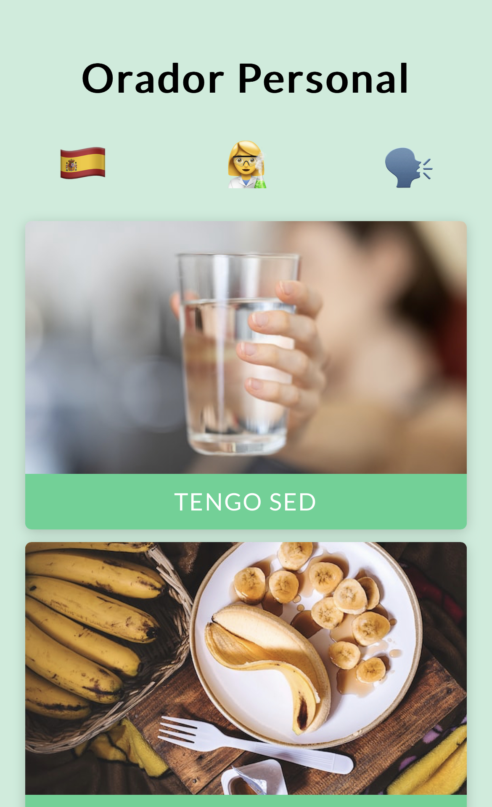
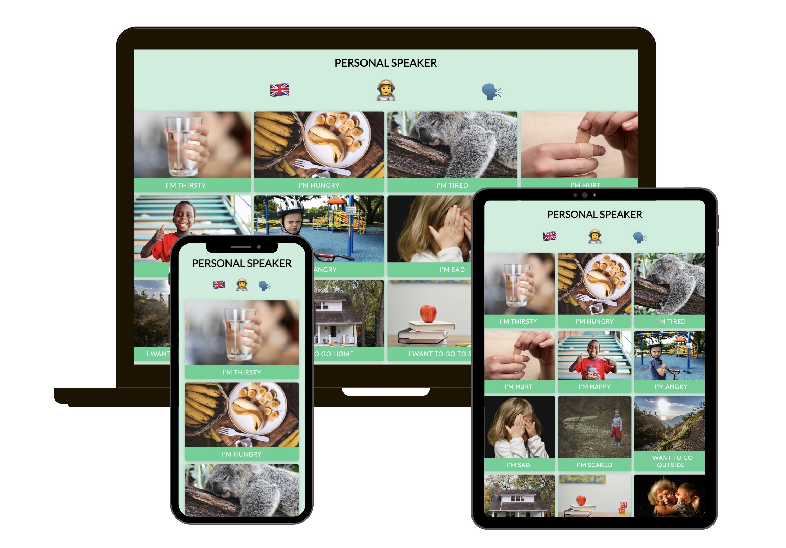

Speakes for you
Front-end and back-end development using web speech api.
Personal Speaker is a web app that speaks for you in various languajes using the web speech api. It is originaly created for children with comunication limitations, but it can be used by anyone
The interface has build-in buttons with pre-designed common messages but also any custom messages can be speaked by the application.